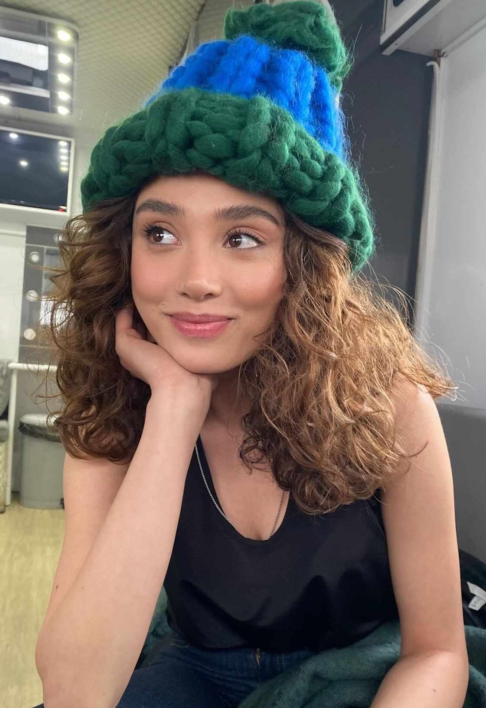
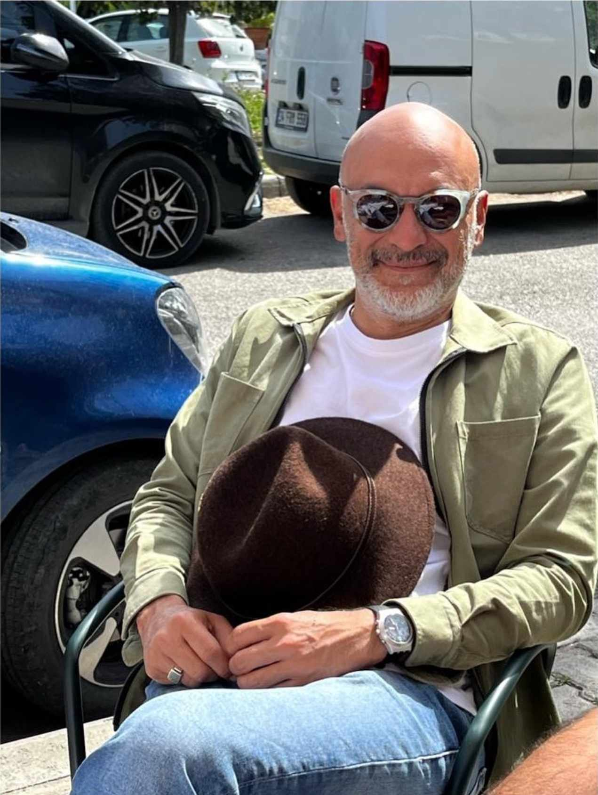

Yabani cast - introducing
Yaman Ali Aydın(Halit Özgür Sarı)
Hayat ondan çok şey çalmıştır. Bu yüzden sahip olduğu iğnenin bile kıymetini bilir. Asla vazgeçmeyeceği dostlarıyla bir dünya kurmayı başarmıştır. Sokakta karşılaştığı zorluklar onun kalbini karartmamış aksine daha da güçlendirmiştir. Bu yüzden içinde umut yeşertmenin hep bir yolunu bulmuştur. Yokluğu, açlığı, hor görülmeyi çok iyi bilir ama o yaşadıklarına saplanıp kalmaz. Yaman için imkânsız diye bir şey yoktur. Gücünü ailesi yerine koyduğu arkadaşlarından, daha doğrusu sokaklardan seçtiği kardeşlerinden alır. Onlar için gerekirse can verir, gerekirse can alır.

Rüya (Simay Barlas)
Hayatındaki herkes ona bir rol biçmiştir ama o kendi istediği rolü oynamaya kararlıdır. Yaşadığı dünyanın göz alıcı renklerine kanmayacak kadar da olanların farkındadır. Ailesinin ve çevresinin içinde ayrık otu gibidir. Etrafındaki kimseye benzememek onun hem şansıdır hem de şanssızlığı. Oysa onun tek aradığı duygu samimiyettir. Farkında olmadan içine girdiği yolculukta aradığından da fazlasını bulacaktır.

Neslihan Soysalan (Dolunay Soysert)
Eşref Soysalan'ın biricik kızı. Mesleğini babası gibi hakkıyla yapan başarılı bir doktor ve yıllar önce kaybettiği oğlunun acısını hala yüreğinde taşıyan bir anne. Bu yüzden mutluluğu kendisine hak görmez. O günden sonra içine yerleşen kaybetme korkusu anneliğine de yansır. Her şeyi kontrol altında tutma çabası etrafındakileri bunaltsa da elinden gelen başka bir şey yoktur. Evladına bir gün kavuşma umudunu hep diri tutmuştur. Ancak kaybettiği oğlu Ali bir gün geri döndüğünde gerçeklerin gün yüzüne çıkmasının önüne geçemeyecektir.

Güven Aydın (Tayanç Ayaydın)
Güven tıpkı adı gibi ona güvenebilirsin ve onunla güvendesin. Adam çok şey yaşamış ama sakin olmaya öğrenmiş. Neslihan'a olan sevgisi yıllar sonra bile o kadar güçlü ki. Artık Yaman'ın kendi oğlu olduğunu öğrendiğinden beri onu mutlu etmek ve beladan kurtarmak için sürekli mücadele eder. Herkes onun gibi bir baba isterdi.

Alaz Soysalan (Bertan Asllani)
Ağzında gümüş kaşıkla doğanların vücut bulmuş hali. Kibri ona her şeye sahip olabileceğini söyler. Hırçınlığın ve öfkenin onu yakıp kavurduğunun farkında bile değildir. Soysalan ailesinin tek erkek torunu olmak onun özgüvenini fazla şişirmiştir. Dedesinin ve annesinin gözüne girmek ona göre hayatındaki en büyük başarısı olacaktır fakat ne yazık ki dengelerin değişebileceğinin henüz farkında değildir.

Asi (Rojbin Erden)
Sokağın Asi kızı. O tanıştığı insanlara ilk önce ismini söylemez. Dişlerini gösterir, tırnaklarını geçirir. Çünkü hayat ona bunu öğretmiştir. Yüzünün kiri, saçının biti kalkanı oldu, kimse ona yaklaşamadı. Ayakta kalmak, hayata tutunmak için çok mücadele verdi. Birlikte büyüdüğü arkadaşları için gözünü kırpmadan kendini feda edecek kadar gözü kara biri.

Çağla Soysalan (Seray Özkan)
Ailesinin gözden kaçan, var oluş mücadelesinin çemberinde dönüp dururken savrulan kızı. En ufak bir tebessüm ve ilgiyle her şeyi unutacak kadar sevgiye aç. O görünür olmak için kendisini kaybetti. Aradığı mutluluğu bulmak için yattığı rüyadan uyanması şart.
Cesur (Sezer Arıçay)
Girdiği her ortama ayak uydurur. Serseri ruhu ile sizi eğlendirirken şeytan tüyü ile de aklınızı karıştırabilir. Onun duygularının ortası olmaz. Mutluluğu da öfkesini de dibine kadar yaşar. Belayı kendisine mıknatıs gibi çekme konusunda eline kimse su dökemez. Bela onu bulmazsa canı sıkılır gider kendisi bulur.
Umut (Ramiz Mullamusa)
Asi, Cesur ve Yaman’ın en büyük zaafıdır. Evin en küçüğü en kıymetlisidir. Zamanında yaptığı fedakârlığın bedelini bedeni ile ödemiştir. Adı gibi hayatında tutunduğu tek umudu bir gün yürüyebilmektir. Ama bunu çok fazla dillendirmez. İmkânların da imkânsızlıklarında farkında olacak kadar olgundur çünkü Umut. Kimsenin kendisi için üzülmesini istemeyecek kadar da gururlu.

Ece Soysalan (Aleyna Al)
Ailenin kazandibi, en tatlı yeri. Esprileriyle ve kahkahalarıyla evi aydınlatan tek ışık kaynağıdır. Onun hastalığı hayat enerjisini kaybetmesine yetmez aksine bir gün iyileşeceğine dair umutlarını hep diri tutar. Onun hayatında karamsarlığa yer yoktur.

Rüzgar (Bartu Dilmen)
Her şeyin en iyisini, en doğrusunu o bilir. Hiç kimse onun bir adım önüne geçemez. Geçmeye kalkana da haddini bildirir. Kusur aramakta üzerine yoktur. Kaf Dağı’nın tepesinde kurduğu tahtında tek başına mutlu mesut yaşar. Her şeye rağmen yanında olanların kıymetini bilmez, aksine incitir. Ondan uzaklaşmak da öyle kolay değildir. Kaybedeceğini anladığı anda geri adım atmasını da kendisini acındırmasını çok iyi bilir.

Eşref Soysalan (Osman Alkaş)
Eşref, kızının hayatını mahvetmesine rağmen zorluklarda yanında oldu ve ona yardım etti. Olacakları bilseydi Güven'i asla komaya sokmazdı, Neslihan'ı Serhan'la evlendirmezdi. Neslihan'ı o kadar çok seviyor ki onu kimseyle paylaşamıyor. Ailesi için savaşan çok mantıklı düşünen bir kişidir.

Metin (Serdar Orçin)
Metin kızına kendini kanıtlamak zorunda olmayan iyi bir babaya benziyor. Karısının aldatmasını ve yalanlarını hak etmiyor.
Serhan Soysalan (Yurdaer Okur)
Neslihan ile evlendiğinde Soysalan imparatorluğunun başına geçeceğini umut eden Serhan, girdiği bu ailede umduğunu bulamadığı gibi artık mutlu değildir.

Şebnem (Şebnem Hassanisoughi)
Tutku, ihtiras, para, güç… Şebnem’i tanımlamak için daha fazla kelimeye ihtiyaç yok. Alacağı kararların üç adım sonrasını hesap edecek kadar kurnazdır. Çıkarı olmayan bir işe elini bile sürmez. Sözcüklerini öylesine dikkatli seçer ki niyetini anlamanız güçleşir. Etrafındakileri manipüle ederek yanında tutmasını çok iyi bilir. Gösteriş ve ihtişam onun en büyük zaafı. Bir de kızı Rüya’yı kendisine benzetebilse…

Özge Aydın (Nur Fettahoğlu)
Özge hakkında söylenecek fazla bir şey yok. Güven'in karısı olarak Güven ve Neslihan'ın arasını tatsızlık çıkaracak kesindir. Ama çok tatlı bir kadın ve rolünü iyi oynuyor.

Feride (Ayşegül Yünsal)
Feride'nin dizideki rolü çok net değil ancak Soysalan ailesine verdiği desteği görebilmekteyiz.

Osman (Güray Görkem)
Eşref'in en güvendiği adamdır. Dizide çok büyük bir rolü yok ama iyi bir izlenim veriyor.

Deniz Aydın (Ata Artman)
Çok zeki, çok eğlenceli, sevimli, komik, ailesine düşkün... Tam bir ideal çocuk. Diziye yeni katıldığı için karakter hakkında fazla bilgimiz yok ancak sevimli görünüyor ve büyük ihtimalle Yaman'la düşman olacak.
Leyla (Gizem Sevim)
Cesur ve güzel bir kadın. Ateş ediyor.
Tolga (Sarp Ilker)
Tatlı bir adam. İyi adama benziyor ama Asi ile hiç şansı yok.
Zafer Demirhan (Kaan Çakır)
Bugünlerde en çok nefret edilen bir rol ama oyuncu çok iyi bir iş çıkarıyor.
Melek (Gizem Sevim)
Setin en tatlı küçük kızı.Melek'in dizide neden konuşmadığını gerçekten merak ediyorum.
About Us
Herkese merhaba. Bu site, az katılımcıyla yapılarak büyük emek verilmiştir. Amacımız, bizzat tarafımızca hazırlanan bilgileri, editleri ve memleri ekleyerek bir hayran sitesi oluşturmaktır. Sitenin kodunu ben yazdım, yani turkish_series11_ (Instagram profilim). Bu oldukça zorlu bir süreçti çünkü çok fazla hata vardı ve pek çok şey işime yaramadı, ancak bir şekilde bunu başardım. Hedefim, Yabani dizisinin oyuncularını memnun etmek ve fandomda daha önce denenmemiş yeni bir şey denemekti. Şimdi biraz koddan bahsedeceğim. Elle yazdım ve sitenin her özelliğinin bu sayede mümkün olduğunu belirtmek isterim. Hazır şablon veya program kullanmadım, sadece Visual Studio Code'u kullandım ve HTML ve CSS işlevlerini öğrenmek zorunda kaldım. Neden Yabani'yi tercih ettim? Çünkü bu dizi, bu kadar emeği hak ediyor. Şimdiye kadar izlediğim en ilginç dizi olduğunu düşünüyorum. Ayrıca oyuncular harika ve hayranlarının çabalarını fark ediyorlar. Umarım onlar da bu siteyi görürler. Projeye 15.01.2024 tarihinde başladık ve oldukça aktif ve yaratıcı olduğumuz için bu süreci nispeten hızlı bir şekilde tamamladık. Diğer katılımcılar ise ideal_yazgim, heditsxzw, ebruxsahiinn, tanricabarllass, editsmerih, simay_barlass_fanpage_, askimbarllass, kardeslerim.editz11, onurvdzs0, _daqna.prv ve _canimebru. Katılımları için onlara teşekkür ederim, onların sayede web sitesi daha yaratıcı ve güzel hale geldi.